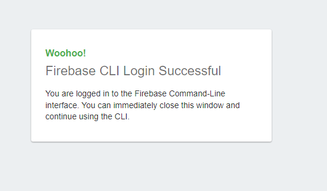
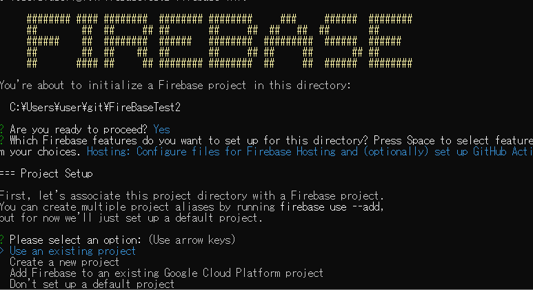

Firebaseの導入手順
事前に準備しておくこと
googleアカウントを用意し、GCPへの登録を済ませておく。コマンドラインツールを用意しておくこと。(Windowsならコマンドプロンプトがいいかもしれない。)
nodejsおよびnpmをインストールしてあること。
公式ドキュメント：Firebase を JavaScript プロジェクトに追加する
手順
-
https://console.firebase.google.com/?hl=ja&pli=1
-
任意のプロジェクト名を入力し、道なりに「続行」ボタンを押していく。Firebaseのサービスが利用できるようになる。
 -
コマンドラインツールを立ち上げる。コマンドラインツールはWindowsならコマンドプロンプトがいいかもしれない。
インストール中に「選択」操作があり、Git Bashだと選択が上手くいかない。
-
Firebaseツールを開発環境にインストール。firebaseコマンドが使えるようになる。
npm install -g firebase-tools

- 